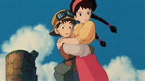

宮崎駿的介紹 神隱少女 霍爾的移動城堡它能在天空中自由移動，是君臨世界各國拉普達帝國的一部分。
帝國滅亡之後，它便成為了天空中的一座孤島。
在1984年天空之城的企劃中，宮崎駿構思出一個重現漫畫電影魅力，建立於十九世紀末如同科幻小說般的題材。
其中，支持著這座島嶼浮空的機制 – 飛行石，成了眾人搶奪的目標。含有王家血統的農家女孩希達，與礦坑男孩巴魯奇蹟般的相遇，造就了一段波瀾壯闊的故事。
這段故事同時也是台灣許多六七年級世代，童年不可或缺的記憶。
我們都記得，少女從天而降遇見少年的故事。
也記得巴魯保護希達一路躲避空賊與軍隊的追趕；不敵軍隊，獲得空賊協助搶救人質，接著進入天空之城展開冒險的情節。
身為宮崎駿筆下最豪情壯闊的故事，天空之城的存在本身就是一種浪漫。
一座漂浮在空中數百年的古老城邦，擁有遠高於現代的科技，同時將自然的佈景與人界的藝術包涵在內；縱觀拉普達，其實就是一個沒有根的國家體制與封建文明。
正因為具有這樣的人文性質，我們才會對這般神秘的國度產生嚮往。
我們並不會對同樣漂浮在天空中好幾年的國際太空站以及哈伯望遠鏡產生嚮往。
因為後者沒有包涵人性與人類文明的軌跡在裡頭，它們可以是科技的指標與里程碑，卻不能如天空之城警世與至高的武力一同，展現出人類征服性的意志。
更重要的是天空之城毋寧說是地上帝國的遺跡，而非往太空探尋的眼。種種方面來說，我們都能看出拉普達是一個文化古蹟，而古蹟就記載歷史；歷史，就是人類文化的軌跡與紀錄。
「根要紮在土壤裡，和風一起生存，和種子一起過冬，和鳥兒一起歌頌春天」
每個看過天空之城的人們都不會忘記希達故鄉肯得亞山谷的詩歌。
然而這句話也是王族來到地面扎根之後的感想，同時道出前面一直鋪陳的疑惑，為何人們最後選擇了地面平凡的生活？為何這樣古老而偉大的文明被埋藏在天空的高處？
一切的文明都要根基在與自然和諧共處，互相理解互相依賴的循環當中生存。
這點在「風之谷」裡提出，在「天空之城」的最後也提出來，沒有遵循天道而一個勁兒的發展，卻遺忘了自己的根本，這不就像是拉普達上的巨木嗎？
「不管妳擁有了多麼驚人的武器，操縱著多少可憐的機器人，離開土地就無法生存的！」
王族的末裔最後選擇了徹底埋葬這塊土地，
然而承載著高度科技的結晶仍然不斷向上攀升，
於是拉普達開始了在宇宙與大氣的天際線間無止境的漂流旅程，你我熟悉的音樂「載著你」響起，這段神聖的音樂隨著天空之城的崩解，繼續在觀眾的心裡繚繞，一直到幾十年後的晚上，聽見還是會不自覺的感動。
少年回想起這部對他來說多重意義的作品，始終無法釋懷，因為那個當年在電視前的小男孩，已經悄然的轉身而去，他想找回盡情享受，遨遊在幻想裡的孩童，在雲端以及夢中尋找他。
然而就那麼一瞬間，少年在一片令人暢快的湛藍中發現了一顆小小地閃光。純潔而神聖的緩緩落下，在他領角的一邊，拉出一道長長的水痕。
「夢中再會，拉普達。」